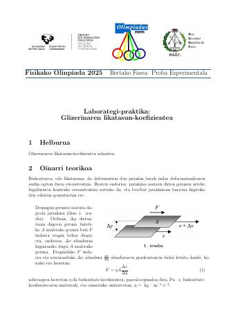
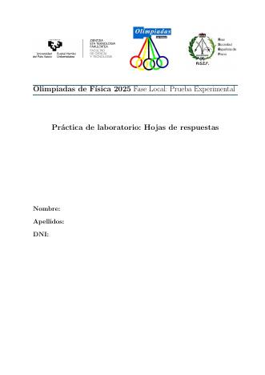
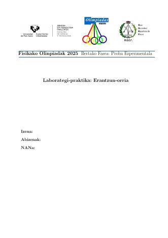
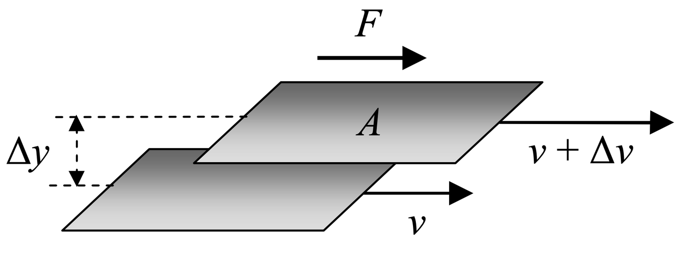
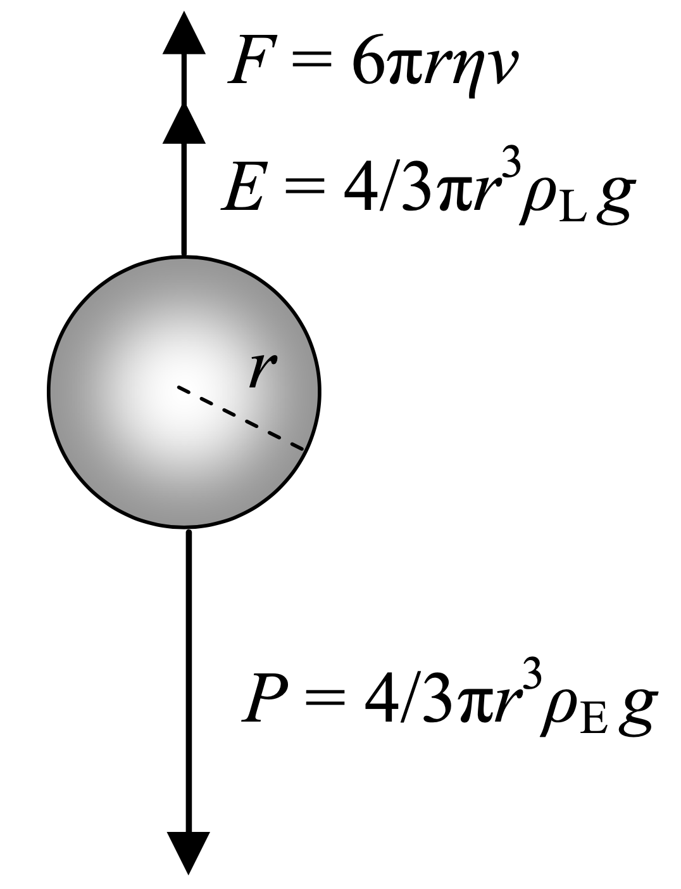
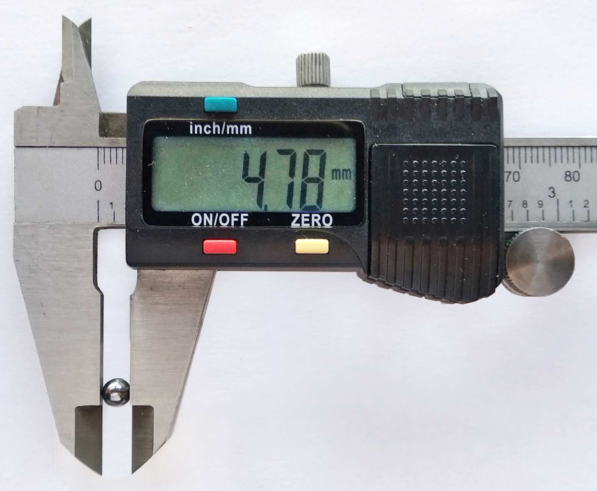
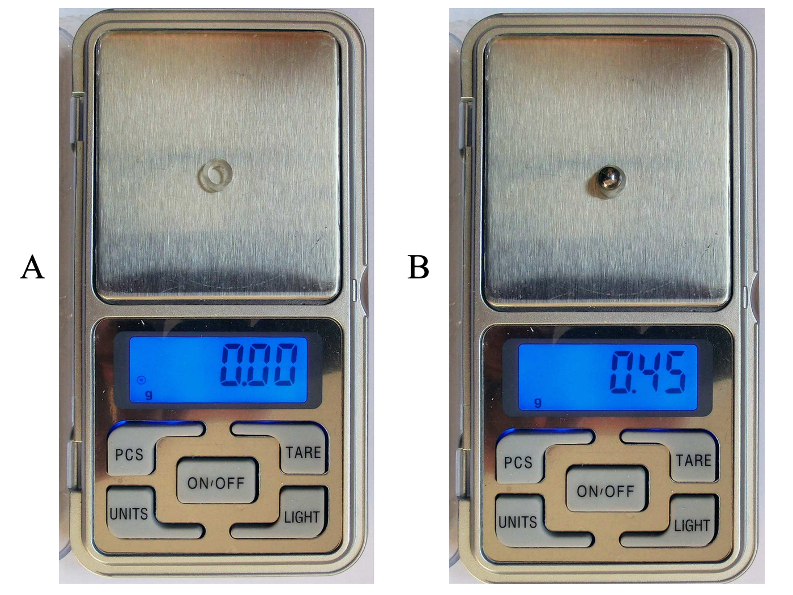
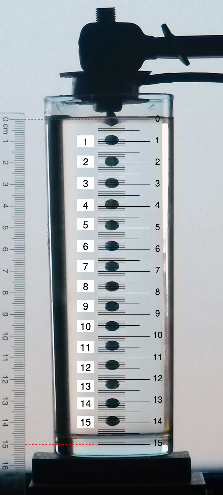

Prueba experimental de 2025
Prueba experimental de 2025
El coeficiente de viscosidad de la glicerina por el método de Stokes: diámetro, masa y densidad de una bola de acero, su velocidad límite desde una secuencia de fotografías, la corrección por las paredes del vaso y la propagación de incertidumbres (η = 1,4 ± 0,1 Pa·s).
OrigenProblema experimental P3 de la fase nacional de 2022 (RSEF), cuya solución oficial es también la de esta prueba.
Documentos
 Enunciadocastellano · PDF · 7.9 MB
Enunciadocastellano · PDF · 7.9 MB
Enunciadoeuskera · PDF · 7.9 MB
Hoja de respuestascastellano · PDF · 0.6 MB
Hoja de respuestaseuskera · PDF · 0.6 MBLa práctica
- PrácticaCoeficiente de viscosidad de la glicerina10 puntosDiámetro, masa y densidad de una bola de acero; velocidad límite en glicerina desde una secuencia de fotografías; corrección de pared; ley de Stokes e incertidumbres.
El enunciado
Práctica de laboratorio · Coeficiente de viscosidad de la glicerina
10 puntos
1. Objetivo
Determinar el coeficiente de viscosidad de la glicerina.
2. Fundamento teórico
La viscosidad es la oposición que muestra un fluido al flujo, lo que provoca resistencia al deslizamiento entre distintas capas del fluido, así como fricción sobre los cuerpos que se mueven a través de él.
Si se considera que un fluido está constituido por capas (figura 1), la fuerza, F, que es necesario realizar sobre una capa de área A para deslizarla con velocidad \Delta v sobre otra capa separada de la primera una distancia \Delta y, es proporcional al gradiente de velocidad:

F=\eta A\,\frac{\Delta v}{\Delta y} \tag{1}
donde \eta se denomina coeficiente de viscosidad. La unidad del coeficiente de viscosidad es el pascal segundo (\mathrm{Pa\cdot s}) que, en términos de unidades fundamentales, equivale a \mathrm{kg\,m^{-1}\,s^{-1}}.
El objetivo del problema es determinar el coeficiente de viscosidad de la glicerina: \eta_g.
Para ello, se deja caer una esfera de acero en un recipiente que contiene ese líquido. Durante la caída de la esfera (figura 2), para velocidades bajas, como es el caso de este experimento, la esfera se ve sometida a tres fuerzas: su peso, P, el empuje del líquido, E, y la fricción experimentada por la esfera, F, debida a la viscosidad. La velocidad de caída aumenta hasta adquirir un valor constante, que se denomina velocidad límite, v_1. Determinado el valor de la velocidad límite, y conocidos los valores del radio, r, de la esfera (o su diámetro, d), la aceleración de la gravedad, g, la densidad de la esfera, \rho_\mathrm{E}, y la densidad del líquido, \rho_\mathrm{L}, el coeficiente de viscosidad viene dado por la siguiente expresión:

\eta=\frac{d^2 g\,(\rho_\mathrm{E}-\rho_\mathrm{L})}{18\,v_1} \tag{2}
La velocidad límite, v_1, de la expresión anterior corresponde a una esfera que cae (Fig. 2) en el seno de un fluido de extensión infinita. Sin embargo, cuando la caída tiene lugar en el interior de un tubo de diámetro D, la velocidad límite ya no es v_1, sino v_\mathrm{m}, menor que la anterior, debido a la resistencia adicional que surge en las paredes del tubo. Ambas velocidades están relacionadas según la siguiente expresión:
v_1=\left(1+2{,}4\,\frac{d}{D}\right)v_\mathrm{m} \tag{3}
3. Material
- Vaso con glicerina
- Esfera de acero
- Calibre
- Balanza
- Regla
- Electroimán con batería e interruptor
- Cámara fotográfica
4. Procedimiento experimental
1. Se mide con el calibre el diámetro de la esfera, como se muestra en la figura 3. Anota el valor del diámetro, d, indicando la incertidumbre de la medida, debida al instrumento, \Delta d. (0,5 puntos)

2. Se mide con la balanza la masa de la esfera. Para evitar que la esfera se mueva, se pone primeramente un pequeño anillo de plástico. Pulsando la tecla «tara», se pone a cero la balanza (figura 4, A); después se pone la esfera sobre el anillo y se lee el valor de la masa de aquella en la pantalla (figura 4, B). Anota el valor de esta masa, m, indicando la incertidumbre de la medida, debida al instrumento, \Delta m. (0,5 puntos)

3. Conocido el diámetro y la masa de la esfera, determina su densidad, \rho_\mathrm{E} junto con la incertidumbre, \Delta\rho_\mathrm{E}. (0,5 + 1,0 = 1,5 puntos)
4. Se llena un vaso con glicerina hasta casi un centímetro del borde, y cerca de la pared del vaso se pone una regla. A muy poca distancia de la superficie de la glicerina se encuentra, conectado a una batería, un electroimán que atrae la esfera. Al desconectar el electroimán se suelta la esfera, que cae dentro de la glicerina con movimiento uniforme casi desde el principio. Con una cámara, situada a suficiente distancia, con el fin de hacer despreciable el error de paralaje, se graba un vídeo, y las imágenes extraídas del mismo, a intervalos de 0{,}20\,\mathrm{s}, se agrupan en una secuencia fotográfica. La regla situada a la izquierda de la fotografía se toma como referencia para superponer una escala de medida. Esta escala, que es la representada en el interior del vaso, permite determinar la posición de la esfera. La composición de la fotografía y la escala se muestra en la figura 5 (la forma elíptica que presenta la esfera en cada posición… ¿a qué se debe?…).

Elabora una tabla de valores, y realiza una representación gráfica de la que pueda obtenerse la velocidad límite, v_\mathrm{m}.
Determina el valor de esta velocidad. (1,5 + 1,0 + 1,0 = 3,5 puntos)
5. Utilizando la expresión (3), obtén la velocidad límite, v_1. Teniendo en cuenta que el recipiente en el que se ha realizado el experimento no es cilíndrico, sino troncocónico, con un diámetro de 5{,}5\,\mathrm{cm} en la parte superior y 4{,}5\,\mathrm{cm} en la parte inferior, se admitirá que D\pm\Delta D=(5{,}0\pm0{,}5)\,\mathrm{cm}. (0,5 puntos)
6. Obtén la incertidumbre de la velocidad límite, \Delta v_1, admitiendo que las incertidumbres \Delta d y \Delta v_\mathrm{m} son despreciables frente a la incertidumbre \Delta D. (1,0 puntos)
7. Sabiendo que la aceleración de la gravedad en el lugar del experimento es g=9{,}80\,\mathrm{m\,s^{-2}}, que la temperatura ambiente es de 20\,^\circ\mathrm{C} y que la densidad de la glicerina a esa temperatura es \rho_\mathrm{L}=1264\,\mathrm{kg\,m^{-3}}, obtén el valor del coeficiente de viscosidad de la glicerina, \eta, a partir de la expresión (2). (0,5 puntos)
8. Obtén el valor de la incertidumbre \Delta\eta, considerando que las únicas incertidumbres significativas son \Delta\rho_\mathrm{E} y \Delta v_1. (2,0 puntos)